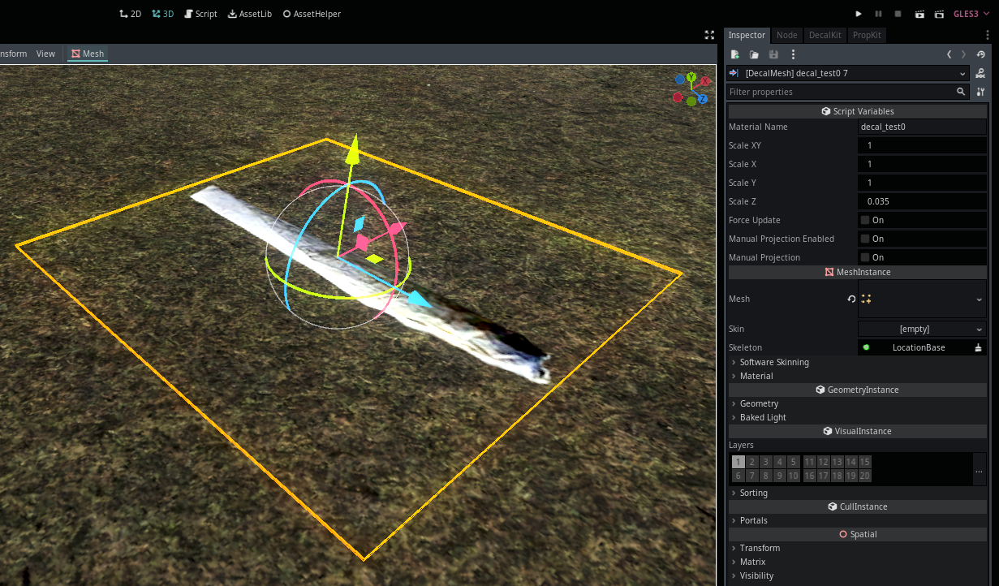

Module: location_decal_mesh
Documentation last edited: October 23, 2025 at 14:33 UTC
Description
LocationDecalMesh
представляет собой оптимизированный декаль, который можно использовать в огромных количествах на любых локациях. Он использует mesh instance для этого (что означает точное освещение, меньшую нагрузку на GPU и т.д.) и объединяет всё вместе при запуске игры. Однако такой тип декалей не быстр в проецировании, так как это вычислительно затратно. Это можно сделать достаточно быстро, но это может быть непригодно для случаев, когда нужно создать кровь персонажа повсюду после выстрела (рассмотри возможность использования
LocationDecal
вместо этого). Создание этих декалей в реальном времени не рекомендуется. Их основное предназначение - размещение их на локациях для добавления дополнительных деталей с помощью плоских плоскостей с полупрозрачными текстурами, которые служат декалями. Другими словами: основное использование этого узла - создание полностью статических декалей.

Принцип работы
Сам узел
LocationDecalMesh
относительно прост, он управляет некоторыми простыми настройками и всем таким. Однако он не содержит логики проецирования. Логика проецирования хранится в
"res://modules/location_decal_mesh/third_party/ProjectedDecal.tscn"
и связанном с ним скрипте.
Код проецирования декалей был вежливо украден отсюда.
Я всё-таки джентльмен.
Честно говоря, я бы хотел объяснить, как именно он делает проецирование, но на самом деле... Он просто содержит ебаную кучу математики, которую я не понимаю. Так что всё, что я делаю, это инстанциирую сцену, чтобы сделать трюк с проецированием, получаю меш и на этом всё. Тебе следует поступать так же. Потеряй контроль. Обрети некоторую сомнительную свободу. Пожалуйста.
General Information
Root directories list
assets, docs, src, third_party
Nodes
LocationDecalMesh
LocationDecalMeshCombiner
projectdecal
Classes
None
Resources
Other Scripts
None